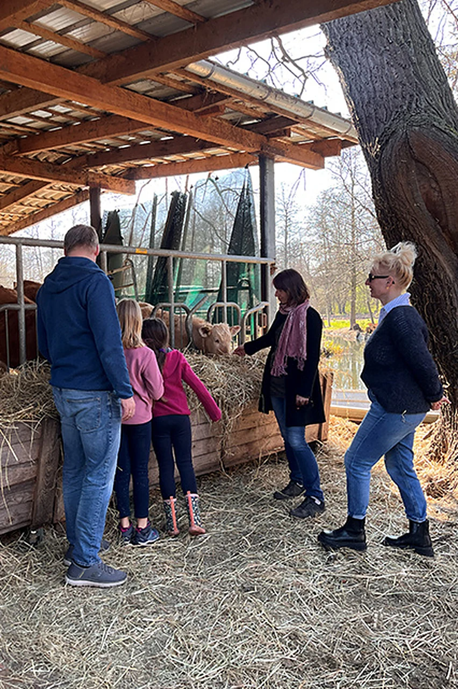

Erleben · Hofführung
Hofgeflüster - Lauschen Sie den Stimmen des Hofes
Freuen Sie sich auf eine spannende Hofführung, bei der wir Sie herzlich willkommen heißen und Ihnen die einzigartige, traditionelle Landwirtschaft auf unserer kleinen Insel näherbringen.

Erleben Sie artgerechte Tierhaltung hautnah und entdecken Sie, wie sämtliche Arbeiten ausschließlich mit dem Kahn erledigt werden – ein echtes Highlight und ein besonderer Einblick in unsere gelebte Tradition.
Zum Abschluss laden wir Sie zu einer kleinen Verkostung unserer hofeigenen Spezialitäten aus der Schlachterei ein.
Den Rundgang über den Mutschenhof können Sie auch zu einer Kahnfahrt dazubuchen (5,00 € pro Person). Die Online-Buchung läuft über das externe Buchungssystem Checkfront.